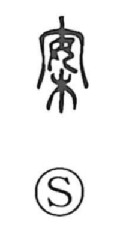

案

Uncategorized
Kun: tsukue | On: an
plan ・ proposal ・ case ・ table ・ to think
Explanation
案 is a phono-semantic character: 安 serves as the phonetic, signaling the on reading an, while 木, placed not at the side but as a supporting base, supplies the concrete image. It originally named a wooden stand for setting things upon—a table or desk. In early usage a stand with legs was called 案, and a low, legless tray was 槃. As such stands came to hold books for study, planning, and examination, the character naturally broadened to mean the act of considering and devising ideas.